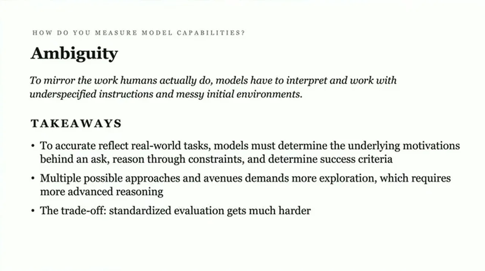
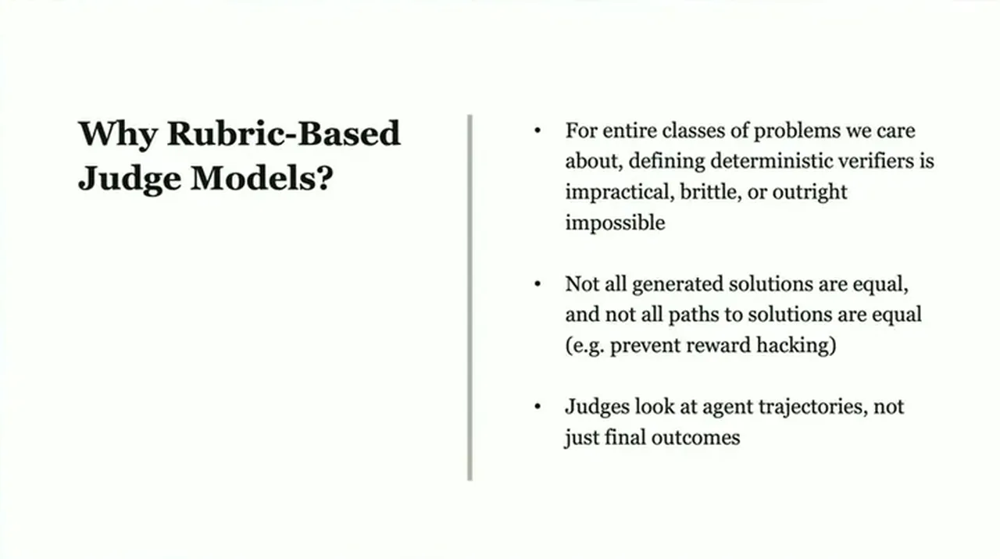
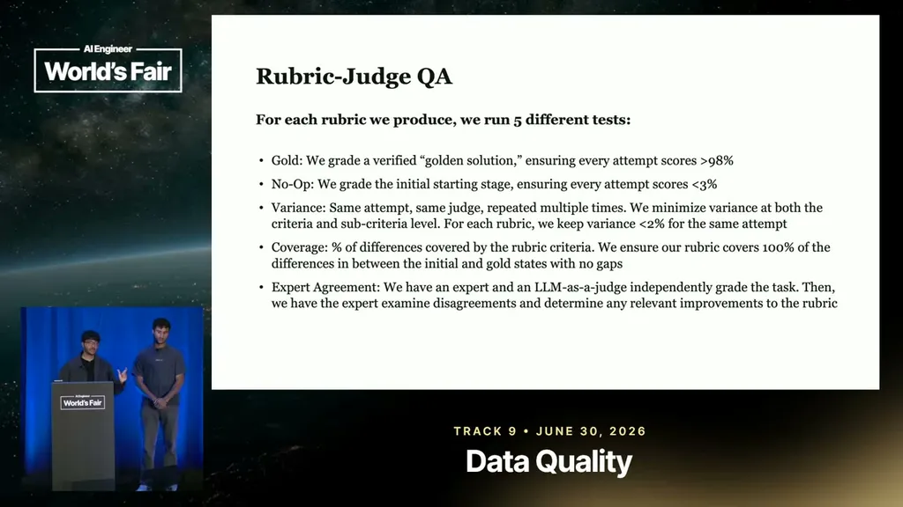

Rethinking Environments for Long-Horizon Work
If you only read one thing
- Long horizon is a scalar, not a binary, and gets measured two incompatible ways: human-hours-to-completion, per Meter's 50%-success threshold, versus model units like tokens and steps, which are noisy across models and harnesses (c1, c2).
- Environment complexity should be judged by state-change dependency, not tool count: sequential tasks where an early misread cascades downstream are harder than parallelizable ones, and because deterministic verifiers don't work for open-ended software work, judge/critic models are needed with safeguards like read-only environment access (c3, c4, c5).
- Named finance benchmarks (GDP Val, ToolBench, Apex Agents) fall short of genuine long-horizon difficulty and cover a narrow task set; Theta's own finance tasks average 15 human-hours across a 50-task sample (c7, c8, c9).
Garg defines long-horizon as a scalar rather than binary property and presents two measurement approaches. Meter's human-horizon method sets thresholds, such as a model achieving 16-hour human-equivalent tasks at a 50% success rate, while model-centric metrics (tokens, steps, tool calls) avoid the human reference but are noisy because they vary heavily by model and harness.
“if a certain model reaches a 16- hour threshold on this benchmark, that means it can achieve tasks with a 50% success rate that take a human 16 hours”
▶ watch at 02:02“different harnesses you care about have a pretty big impact on how many tokens are actually consumed on a task”
▶ watch at 02:33
Garg argues environment complexity should be measured by how much earlier decisions influence later ones, not by chaining unrelated tasks together or counting tools. Parallelizable work, like sub-agents independently scanning files in a large codebase, involves little state change, whereas sequential work, like querying dashboards or logs, can let an early bad query or misread cascade into major downstream consequences.
“a bad early query or a misread can cascade into these downstream steps that really start to have major consequences later on”
▶ watch at 08:45
For software-heavy domains where correctness can't be checked with a script, test case, or proof, Theta uses judge or critic models instead of deterministic verifiers, since writing a deterministic verifier for many real problems would be impractical, brittle, or impossible. Because judges often need to inspect the live environment state (e.g., GitHub and CloudWatch logs) rather than just the trajectory, Theta enforces read-only permissions so the judge can't accidentally mutate the environment after the agent finishes.
“there's like an entire class of problems that are really important and a lot of the problems we care about that really you can't really write a deter deterministic verifier for”
▶ watch at 11:52“we don't want the judge to make an accidental mutation in some way to the environment after the agent is done”
▶ watch at 15:00
Garg warns that overloading a rubric with too much granular density backfires on frontier-level problems, since judges struggle to apply an overly dense rubric consistently, wasting compute on tasks the model can't yet learn from.
“especially for frontier problems that models aren't really capable of yet, judges will really struggle to apply that rubric consistently”
▶ watch at 16:32
Garg critiques three finance-focused benchmarks -- GDP Val, ToolBench, and Apex Agents -- for average human-hours-per-task that fall well below Meter's long-horizon threshold, and for narrow scope (GDP Val's finance tasks are mostly Excel work; Apex Agents focuses largely on investment banking). He also flags that Apex Agents' pass@1 metric, where 57% of cases are scored fully solved, may overstate real coverage. Theta's own finance dataset averages 15 human-hours per task across a 50-task sample.
“a lot of these different average human hours per task fall far below that and so they wouldn't actually be considered long horizon tasks”
▶ watch at 18:34“pass at one effectively means that for like 57% of cases, the tasks are 100% solved”
▶ watch at 19:05“the human time to complete one task on average is 15 hours over a 50 task sample set”
▶ watch at 20:38Commentary (ours)
The talk's own numbers are self-reported without an external audit, the same limitation it levels at GDP Val, ToolBench, and Apex Agents; the critique of narrow benchmark scope is well-argued, but Theta's 15-hour, 50-task finance sample hasn't been shown to avoid the same breadth or saturation problems (ours).


Underlying detail — every claim, typed and timestamped (9)
| Stance | Claim | t |
|---|---|---|
| asserts | Meter defines long horizon via a success-rate threshold: reaching a 16-hour human-equivalent task at 50% success means a model has hit that level. | 02:02 |
| warns | Token and step counts are noisy proxies for task difficulty because they vary heavily by model and by harness. | 02:33 |
| asserts | Sequential tasks where an early error cascades downstream are a better measure of environment complexity than counting tools. | 08:45 |
| recommends | For open-ended software-domain problems, deterministic verifiers are often impractical or impossible, so judge/critic models are needed instead. | 11:52 |
| warns | A judge model needs access to live environment state to verify correctness, but must be prevented from accidentally mutating that state. | 15:00 |
| warns | Overly dense rubrics cause judges to apply them inconsistently, especially on frontier-level problems. | 16:32 |
| warns | Average human-hours-per-task on GDP Val, ToolBench, and Apex Agents fall far below Meter's long-horizon threshold. | 18:34 |
| warns | Apex Agents' pass@1 metric means 57% of cases are scored as fully solved, which may overstate model coverage of the task set. | 19:05 |
| asserts | Theta's own finance dataset averages 15 human-hours per task over a 50-task sample. | 20:38 |
Machine-readable copy embedded in this page (script#ontology) and in the corpus ontology.